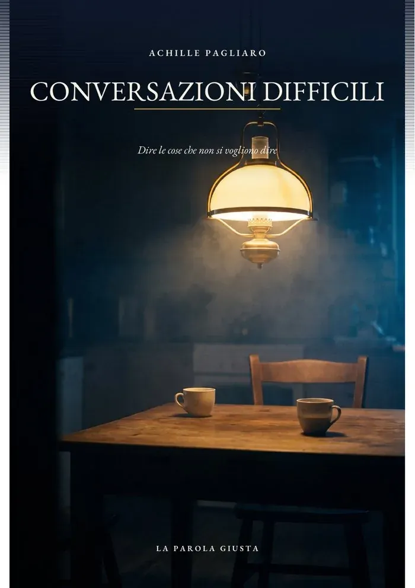

C'è una conversazione che stai rimandando in questo momento. Quasi tutti, se si fermano un attimo, sanno esattamente quale sia.

Riguarda un collega, un familiare, un cliente, un socio. È in sospeso da settimane o da mesi, e ogni volta che potresti affrontarla trovi una ragione ragionevole per non farlo: non è il momento giusto, sono stanco, forse si risolve da sola.
Non si risolve da sola quasi mai, e il costo di ogni giorno che passa è più alto di quanto sembri.
Il rinvio non è pigrizia, ed è utile saperlo: chi si spiega il problema con un difetto di carattere non lo risolve. È una decisione istintiva fra due costi che non sono confrontabili. Da una parte il disagio della conversazione: certo, immediato, con una faccia davanti. Dall'altra il danno del rinvio: incerto, futuro, e senza nessuno che te lo faccia notare.
Cambiano i nomi e i contesti, ma la forma è sempre la stessa:
Non frasi motivazionali sul coraggio di parlarsi: la meccanica di come si prepara, si apre, si regge e si chiude una conversazione che nessuno dei due voleva fare.
Cosa decidere prima di aprire bocca, e quali condizioni di momento e luogo rendono la conversazione possibile.
Criticare un comportamento verificabile e circoscritto invece della persona. Sono due cose diverse e producono effetti opposti.
Cosa fare quando il tono sale, e come non entrare nel contrattacco quando l'altro attacca.
Il silenzio e il monosillabo sono più difficili dell'aggressività, e richiedono una mossa diversa.
Dopo che è andata male. Funziona molto meglio di quanto le persone credano, e quasi nessuno la tenta, sperando che passi da sé.
Chiudere una conversazione senza fingere che il problema sia risolto, che è quello che quasi tutti fanno.
Le critiche fatte male producono tre risultati insieme: nessun cambiamento, un rapporto peggiore, e la sensazione, in chi le ha fatte, di aver comunque assolto a un dovere. È la combinazione peggiore possibile, ed è anche la più frequente.
Vale la pena partire da una distinzione che quasi nessuno fa: la differenza fra criticare un comportamento e criticare una persona.
«Il report è arrivato in ritardo tre volte questo mese» riguarda un comportamento: è verificabile, circoscritto, e modificabile.
Prima o poi succede: si dice una cosa che non si doveva dire, si reagisce in un modo di cui ci si pente il giorno dopo. Quello che accade nelle ore successive decide se resterà un episodio o diventerà una frattura.
La riparazione funziona molto meglio di quanto le persone credano, e quasi nessuno la tenta. Il motivo è quasi sempre lo stesso: la speranza che passi da sé. E in parte passa, nel senso che si smette di parlarne — ma quello che resta non è niente.
C'è anche il caso in cui non si trova un accordo, e va chiuso lo stesso: senza fingere che il problema sia risolto, che è la scorciatoia più comune e la più costosa.
Critiche, richiami, decisioni sgradite. Il capitolo sulla critica al comportamento è materiale da usare il giorno dopo averlo letto.
Clienti, soci, fornitori: le conversazioni che si rimandano per non compromettere un rapporto, e che compromettono il rapporto proprio così.
È il terreno dove si rimanda di più, perché non c'è una scadenza che obblighi. Il capitolo sulle conversazioni che si ripetono nasce qui.
È la paura che tiene ferme quasi tutte queste conversazioni, e il libro la affronta subito. Chi ha appena finito una conversazione difficile è il peggior giudice di come sia andata: ricorda i momenti peggiori. A qualche settimana di distanza la valutazione cambia quasi sempre nella stessa direzione.
Sì, molte, con la versione che funziona e quella che sembra uguale ma produce l'effetto opposto. Non sono formule da recitare: servono a vedere la differenza fra parlare di un comportamento e parlare di una persona.
Ci sono due capitoli dedicati: uno a chi attacca, uno a chi si chiude, perché richiedono mosse opposte. Il secondo caso è il più difficile dei due.
Sì, ed è il terreno dove si rimanda di più: al lavoro prima o poi una scadenza ti obbliga, in famiglia no. Il capitolo sulle conversazioni che si ripetono ogni sei mesi nasce esattamente lì.
Subito dopo il pagamento ricevi il link di download via email. È un PDF illustrato, leggibile su computer, tablet, telefono ed ereader.
Dire le cose che non si vogliono dire
Pagamento unico. Ricevi il link di download subito dopo l'acquisto.
Dedica di apertura